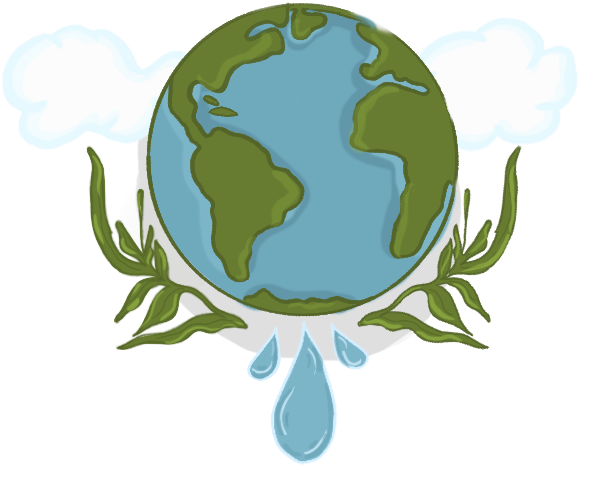

Ecologische Duurzaamheid
De Ceuvel heeft de zwaar vervuilde grond van het oude scheepswerf in 10 jaar aanzienlijk schoner gemaakt. Het terrein is daarnaast ook volledig zelfvoorzienend in energie en afvalverwerking. Hoe hebben ze dit gedaan?
De Ceuvel maakt gebruik van duurzame technologie en creatieve innovaties om zo duurzaam mogelijk te zijn. Zo sluiten ze lokale kringlopen en gaan ze op nieuwe manieren om met afval en oude materialen. Naast moderne technieken vanuit de mens houdt de Ceuvel ook heel veel rekening met de natuur en werken ze als een Zoöp samen met elkaar.
Hieronder zijn een paar voorbeelden hoe de Ceuvel deze technologieën en innovaties toepast.
Fytormeditatie
De grond van de Ceuvel is vervuild met vooral PAK’s en zware metalen. Normaal wordt zulke grond tot een bepaalde diepte afgegraven en elders gestort. Hiermee los je het probleem niet op je verplaatst het alleen. De Ceuvel pakt dit anders aan. Ze zijn bezig om de vervuiling ter plekke te verminderen met behulp van speciale planten die de vervuilende stoffen uit de grond halen, ook wel “fytormeditatie” genoemd.
Struviet Reactor
Fosfaat en stikstof zijn essentiele elementen voor planten om te groeien, maar de manier waarop we nu stikstof uit de atmosfeer halen leidt tot grote veranderingen in de wereldwijde stikstofcyclus, en we worden ook geconfronteerd met de uitputting van de wereldvoorraad fosfaat die uit de aarde wordt gewonnen. Door het terugwinnen van deze voedingstoffen uit afvalstromen kan je deze kringlopen sluiten op lokaal en stedelijk niveau. De Ceuvel onderzoekt hierdoor methoden om die voedingsstoffen terug te winnen van nutriënten uit urine. Ze doen dit met een struviet reactor, die fosfaat uit de urine terug wint. De fosfaatkristallen worden dan vervolgens gecombineerd met andere lokale nutriënten die dan als meststof dienen voor de lokale voedselproductie in de groentekas.
Zonnepanelen
De Ceuvel heeft wel meer dan 150 fotovoltaïsche (PV) panelen die energie opwekken met behulp van de zon. Ze staan merendeels op de kantoorboten en leveren 25% aan stroom voor de warmte pompen en deels voor de overige energiebehoeftes van de kantoren.
Helofyntenfilters
Per kantoorboot wordt het afvalwater van de keukenspoelbakken gezuiverd, dit is mogelijk door het biofiltratiesysteem (helofytenfilters) die naast de boten staan. Het systeem bestaat uit verschillende lagen om het water te filtreren, waaronder een biologische laag met perliet en planten die de organische stoffen als fosfor en nitraat opnemen. Na de zuivering wordt het water veilig in de bodem geïnfiltreerd.
Compost toiletten
Het was niet mogelijk om riolering aan te leggen in de grond van de Ceuvel vanwege de vervuiling. Dit probleem hebben ze opgelost door bij alle kantoorboten droog composttoiletten aan te leggen. De compost uit deze toiletten wordt in de tumbling composter achter Metabolic Lab* verder verwerkt tot veilige compost.
Upcycling
De Ceuvel is voornamelijk gebouwd uit restmateriaal, zo zijn de kantoorboten gemaakt uit oude woonboten die eigenlijk naar het grofafval gingen. Ze zijn opgeknapt tot creatieve en energie-efficiënte kantoren, door middel van tweedehands materialen uit heel Nederland. De term upcycling is een heel belangrijk onderdeel van de filosofie van de Ceuvel, maar ook van de visuele esthetiek. De Logic Works werkplaats tegenover het café heeft verschillende meubels gemaakt uit oude industriële materialen en oude boten en hebben het een totaal nieuw leven gegeven.